Air Supply
Air Supply
Air supply
The N55 is a BMW Twin Power Turbo engine featuring dual forced induction. Engine N55 features 1 twin-scroll exhaust turbocharger which is driven by 2 exhaust ports (dual turbocharging).
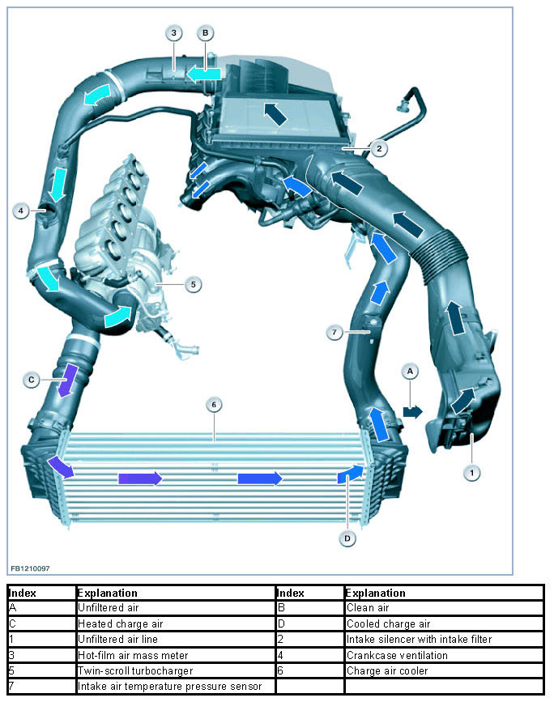
Brief component description
Descriptions of the following components of the air supply are provided:
- Differentiated air intake system
- Intake air temperature pressure sensor
- Electromotive throttle actuator
- Blow-off valve
- Twin-scroll exhaust turbocharger with wastegate valve
- Hot film air mass meter.
Intake manifold
The Digital Motor Electronics (DME) is connected to the differentiated air intake system. which means that intake air is also used to cool the Digital Motor Electronics (DME).
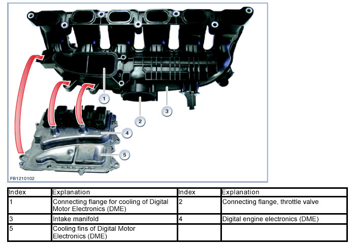
Intake air temperature pressure sensor
The intake air temperature pressure sensor is attached to the charge air pipe.
This combined sensor delivers the following information to the Digital Motor Electronics (DME):
- Temperature of the charge air
- Charging pressure.
The purpose of the charging pressure sensor is charging pressure control. The Digital Motor Electronics (DME) also adjusts the position of the throttle valve based on the signal from the intake-manifold pressure sensor.
Intake air temperature sensor
A temperature-dependent electrical resistor is used for temperature sensing. The circuit contains a voltage divider where the resistance can be measured depending on the temperature. A temperature is converted using a characteristic curve specific to the sensor. An NTC resistor is installed in the intake air temperature sensor; its resistance value falls as the temperature rises. The change in resistance between 167 kOhm to 150 Ohm is temperature-dependent, and corresponds to temperatures between -40 °C and 130 °C.
Charging pressure sensor
Strain gauges are used to record the charging pressure. A membrane equipped with strain-gauge strips is deflected by the applied pressure. The changes in resistance in the strain gauge are electronically detected by a Wheatstone bridge and evaluated. The voltage measurement is then used as the actual charge-air-pressure control value.
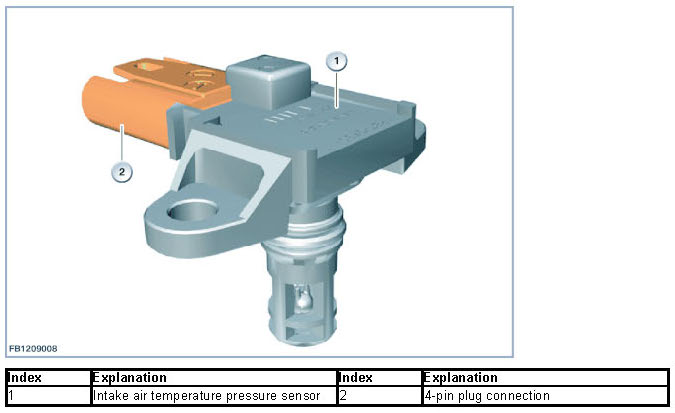
The charging pressure information is sent to the Digital Motor Electronics (DME) via a signal line. The signal for evaluation of the charging pressure fluctuates depending on the pressure. The measuring range of approx. 0.5 to 4.5 volts corresponds to a charging pressure of between 20 kPa (0.2 bar) and 250 kPa (2.5 bar).
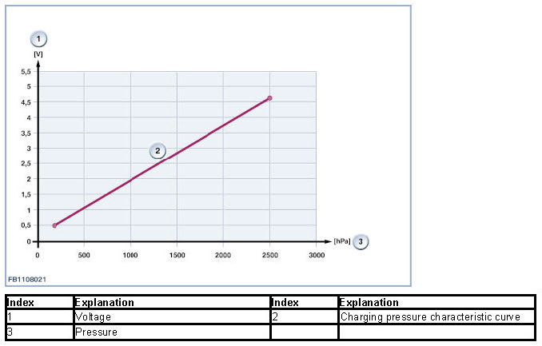
Electromotive throttle actuator
The electromotive throttle actuator is attached to the intake plenum and adjusts the throttle valve. The air supply to the engine is modified by adjusting the throttle valve. The Digital Motor Electronics (DME) calculates the position of the throttle valve using the following information:
- Position of accelerator pedal
- Torque request from other control units.
The Digital Motor Electronics (DME) opens or closes the electromotive throttle actuator electrically. The throttle valve opening angle in the electromotive throttle actuator is monitored by 2 hall effect sensors.
The throttle valve is moved by an electric actuator motor. This servomotor is actuated by a pulse-width modulated signal with a frequency of 1000 Hz.
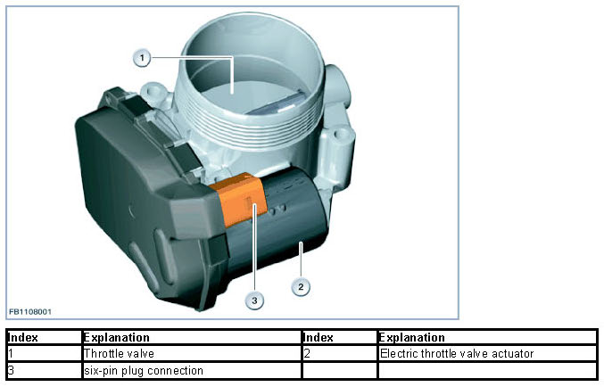
The throttle valve has a mechanical adjustment range of 0 to 90°. The maximum position that is actually moved to is 81° (corresponds to 100 % throttle valve opening ).
In the de-energized state, the throttle valve is held in the emergency running position of approx. 5.2° by 2 throttle return springs. These two springs also ensure that the throttle valve is returned to this position if a fault develops (activation deactivated).
The Digital Motor Electronics (DME) uses the actual position measured to convert the required throttle valve opening setpoint into a signal.
The diagnosis monitors the two hall effect sensors. The electrical function (short circuit to ground, short circuit to B+ and line disconnection) and plausibility of the sensor signal are monitored.
The diagnosis runs continuously as soon as the following preconditions are satisfied:
- Terminal 15 on
- No electrical fault detected.
The Digital Motor Electronics (DME) receives a measured value of between 0 and 5 volts from the hall effect sensor. With the aid of the learned lower stop and a codable slope, the Digital Motor Electronics (DME) converts this voltage into the throttle valve opening angle. The diagnosis monitors the two signals with reference to a lower and upper voltage range.
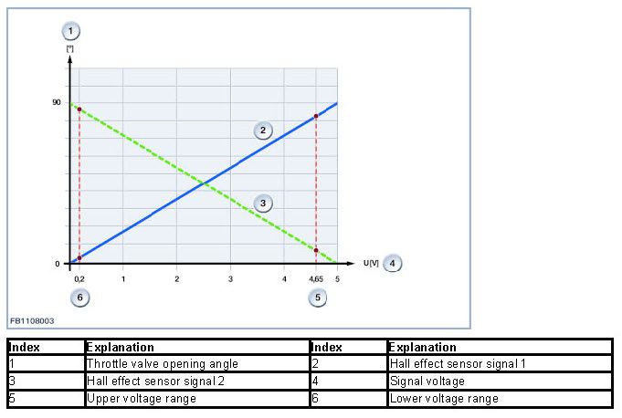
Blow-off valve
The compressor bypass valve opens to prevent intense oscillations in the impeller when the throttle valve is suddenly closed (for instance, during gear changes). The sets up a flow around the twin-scroll turbocharger. The compressor bypass valve prevents air from pulsating against the closed throttle valve.
The compressor bypass valve serves the following purposes:
- Improved engine acoustic properties
- Protection for the twin-scroll turbocharger.
Additional effect: The twin-scroll turbocharger responds rapidly to renewed opening of the throttle valve. If the compressor bypass valve were not present the twin scroll turbocharger would be forced to overcome the backpressure from the closed throttle valve, which would reduce its speed. The twin-scroll turbocharger would respond more slowly when the throttle valve reopens.
The following illustration shows how the compressor bypass valve operates.
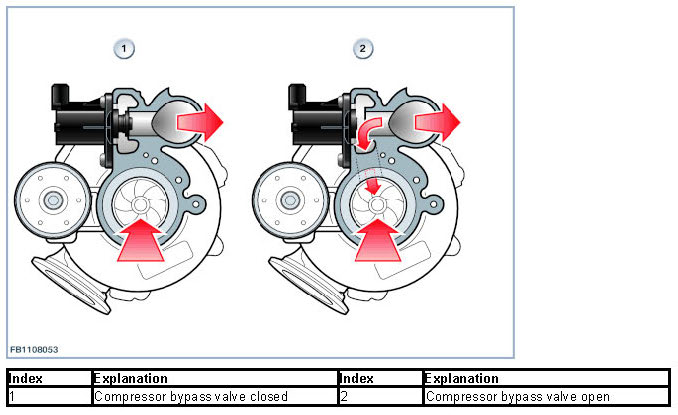
The blow-off valve is attached to the exhaust turbocharger.
In contrast to the N54 engine, the blow-off valve is not operated pneumatically. The compressor bypass valve on the N55 assumes the form of an electric actuator controlled directly by the DME digital engine electronics system. Placing the compressor bypass valve on the twin-scroll turbocharger has made it possible to substantially reduce the number of components.
The compressor bypass valve is either open or closed, with no intermediate positions.
Exhaust turbocharger with wastegate valve
The engine features a twin-scroll exhaust turbocharger. As the dynamics in the exhaust manifold increase at low engine speeds, the energy in the exhaust gases is utilized more effectively. This means the maximum torque is reached at engine speeds as low as 1200 rpm. The charging pressure is regulated by the Digital Motor Electronics (DME) via a wastegate valve. The wastegate valve is adjusted pneumatically by a diaphragm box. A pressure converter applies a partial vacuum to the diaphragm box. The exhaust turbocharger has 4 connections for cooling and lubricating the exhaust turbocharger:
- 2 connections for engine cooling circuit
- 2 connections for the oil circuit.
Hot-film air mass meter
The SIMAF GT2 hot film air mass meter by Siemens is used. The hot film air mass meter features planar resistors on glass. Its accuracy at all temperatures has been increased and its sensitivity to water and pulsation has been reduced.
The hot film air mass meter is secured to the air intake hose on the intake silencer and is a combined sensor. The hot film air mass meter detects the actual amount of air independently from the air pressure. The Digital Motor Electronics (DME) calculates the quantity of fuel to be injected in conjunction with other sensors. An intake air temperature sensor is integrated into the hot film air mass meter. This sensor measures the temperature of the intake air before the exhaust turbocharger.
An electrically heated measuring cell protrudes into the air flow. The measuring cell is maintained at a constant temperature continuously. The air flow draws heat from the measuring cell. The greater the air mass flow the more energy must be deployed to keep the temperature of the measuring cell constant.
The characteristic curve of the hot film air mass meter is extended in the negative value range of the air mass flow (range greater than 550 micro s). Pulsations due to the uneven firing interval on a cylinder bank also mean that negative air mass flows occur during driving. These negative air mass flows are included in the calculation.
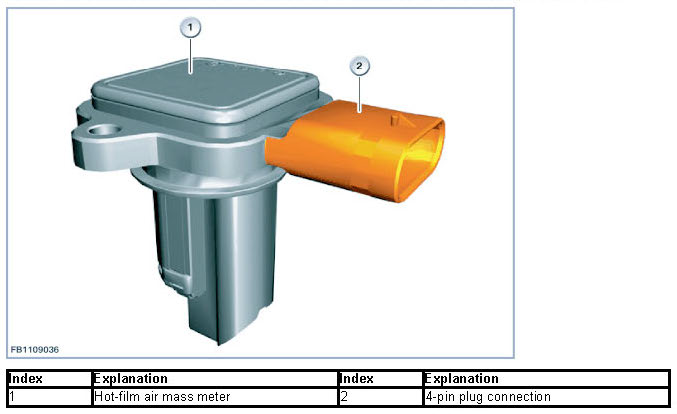
The hot film air mass meter has a frequency-coded output signal. The sensor is designed in such a way that return flows (dynamic pulsation in the intake pipe) can be detected and processed both with regard to their amount and direction of flow.
The air mass signal is temperature-dependent. High accuracy is required to precisely determine the air mass. This is why the air mass signal received by the Digital Motor Electronics (DME) must be corrected using the signal from the intake air temperature sensor.
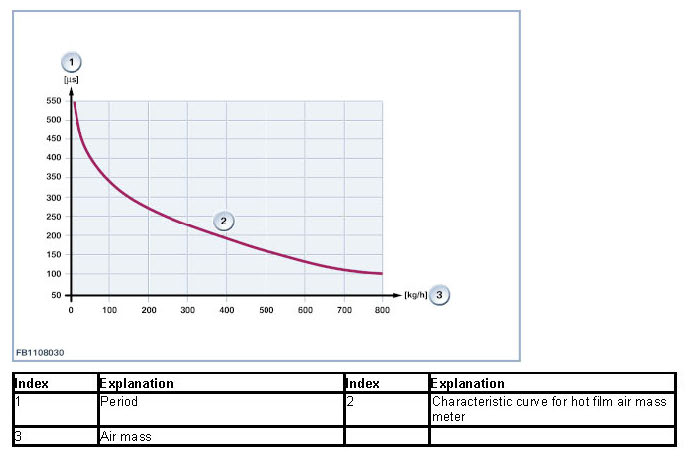
System overview
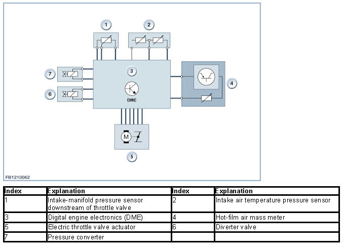
System functions
The following graphic illustrates how the air supply works.
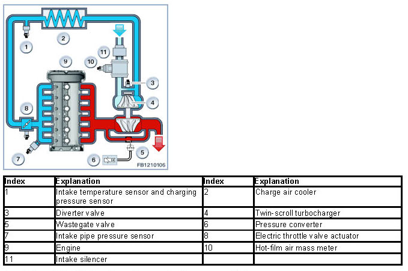
Descriptions of the following air supply system functions are provided:
- Calculation of air mass
- Charging pressure control
- Idle speed control.
Calculation of air mass
The air mass drawn in is no longer measured directly by the hot film air mass meter and is calculated by the Digital Engine Electronics (DME) instead. A suitable model has been programmed in the Digital Engine Electronics (DME) in order to be able to perform this calculation. The following signals are input into this calculation:
- VANOS setting (load sensing)
- Position of throttle valve
- Intake air temperature (correction of air density)
- Engine speed (cylinder filling levels)
- Intake pipe vacuum (correction during throttling)
- Ambient pressure (air density divided by altitude correction).
The air mass calculated in this way is synchronized with:
- Signal from oxygen sensor (air/fuel ratio)
- Fuel injection period (fuel quantity).
If necessary, the calculated air mass is corrected. If the oxygen sensor fails, a fault is entered in the fault memory of the Digital Motor Electronics (DME) (air mass plausibility check). In such cases, the calculated air mass is no longer compared.
Charging pressure control
The charging pressure is regulated by the Digital Motor Electronics (DME) via the wastegate valve on the twin-scroll exhaust turbocharger. The pressure converter produces a defined vacuum by converting the signals from the Digital Motor Electronics (DME) in order to adjust the wastegate valve steplessly.
A blow-off valve is flange-mounted to the twin-scroll exhaust turbocharger. This blow-off valve can establish a connection between the intake and pressure side by activating the Digital Motor Electronics (DME) directly.
Undesirable charging pressure peaks that may arise when the throttle valve is closed are dissipated via the blow-off valve. If the throttle valve is closed, a pressure wave builds up between the throttle valve and the twin-scroll exhaust turbocharger. This pressure wave can result in a higher load on the bearings of the turbine shaft.
The compressor bypass valve serves the following purposes:
- Improved engine acoustic properties
- Protection for the twin-scroll turbocharger.
The charging pressure is regulated by the Digital Motor Electronics (DME) with reference to a maximum pressure of 0.8 bar via a wastegate valve. Some of the exhaust gases bypass the twin-scroll exhaust turbocharger via the wastegate valve. The wastegate valve is adjusted pneumatically by a diaphragm box. The wastegate valve can be set variably. A pressure converter applies a partial vacuum to the diaphragm box. The Digital Motor Electronics (DME) controls the pressure converter.
Idle speed control
NOTICE: Separate functional description.
A separate functional description is provided for the idle speed control.
We can assume no liability for printing errors or inaccuracies in this document and reserve the right to introduce technical modifications at any time.